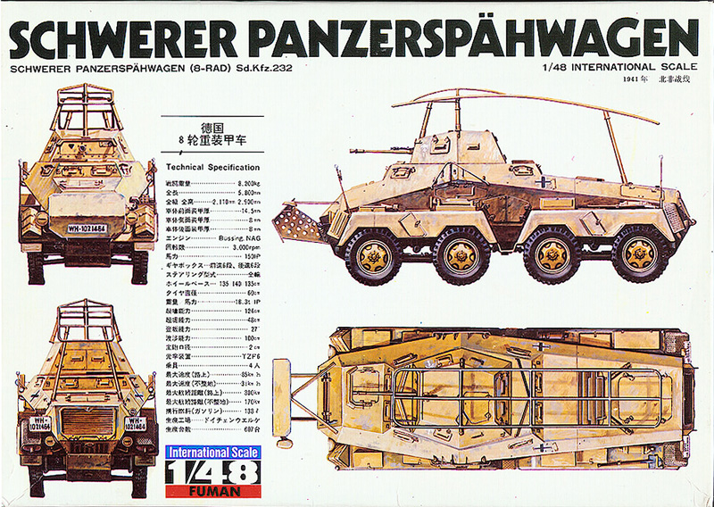
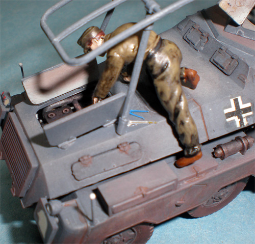

{kind=link}
{kind=link}
{kind=link}
{kind=link}
{kind=link}


Fuman (ex-Bandai) 1/48 Sd. Kfz. 232 PanzerSpähwagen (8-Rad)

Kit #FM142 Collector’s Market Value $35.00
Images and text Copyright © 2009 by Matt Swan
I have always been attracted to wheeled vehicles with multiple axes and this one has always been high on my wish list. Now the kit is originally a Bandai kit form the 1970s which was reissued in the same time period by Fuman. Later in the ‘70s the molds were leased to Monogram I believe and were shipped by freighter to the US. Unfortunately things went badly and the freighter sank during a storm sending these masters along with many other Bandai masters straight to Davy Jones stash. This pretty much eliminated any possibility of picking up a kit at the local hobby shop.
During the eighties and nineties I basically forgot all about this kit but then, and there is always a ‘but’ isn’t there? While surfing E-Bay around 2000 I saw a couple for sale but with some pretty stiff pricing going on, way more than I cared to pay. I did place a bid here and there on different pieces but never won. Then I got lucky, I dropped a $15 bid on one ending in the middle of the week and what do you know – I was the proud owner of a 1/48 Spähwagen. So I pay the guy and patiently wait for delivery – nothing. Turns out the seller had a heart attack later that night and ended up in the hospital. His wife was thoughtful enough to contact me and keep me up to speed so I wait longer, a month goes by and finally the guy recovers and goes home. At long last my Spähwagen arrives and it is just as nice as I expected.

At this point in time I was building mostly aircraft with very little work being done in vehicles. Still, I went ahead and started this kit. After about a week on the bench I became frustrated with how the paint was looking and shelved the whole project. Everything went back into the box and got buried deep within the stash. Summer 2004 the box saw daylight once again. I considered working on it but just could not get enough interest worked up; back into the stash she goes. February 2009 the kits surfaces once again and this time I am determined to get this done. Once I made the commitment it only took about a week to get the job done. I added some corner markers made from magnet wire with superglue bulbs on the ends, decals came from the spares box as the original kit included ‘stickers’, not decals. One figure was modified slightly to hold the rifle which was a kit included accessory.
Interior paint was RLM-76 and exterior was gunship gray. I used a combination of sludge wash and Rustall to begin the weathering then followed with several applications of different ground pastel chalks. Decals were sealed with Future and final finish was done with thinned Polly Scale clear flat. The display base is just something I threw together with some railroad flocking and a tree purchased from Sierra Scale – those “O” scale railroad accessories are real handy for diorama building. Four figures came with the kit, two of which are used for the display with the mechanic being constructed from various body parts from my modeling “graveyard”. Some other details came from Hauler and odd stuff in the parts yard. I am very glad I worked up the gumption to get this one done – not something you see often in this scale plus the detail level (full engine in there fellas) is better than anything coming from the big guys these days in this scale.